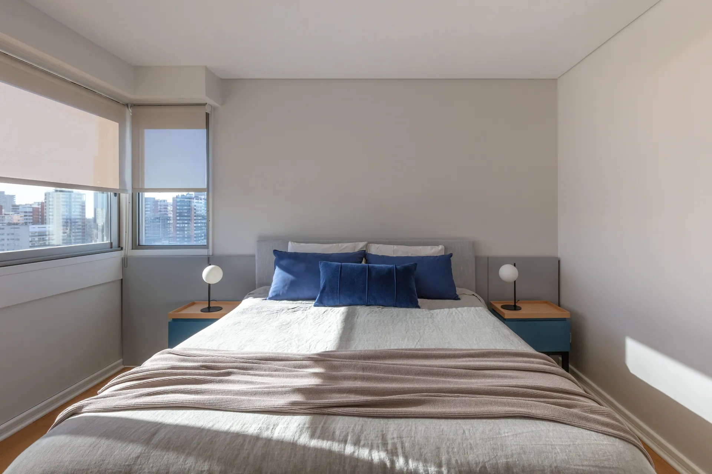
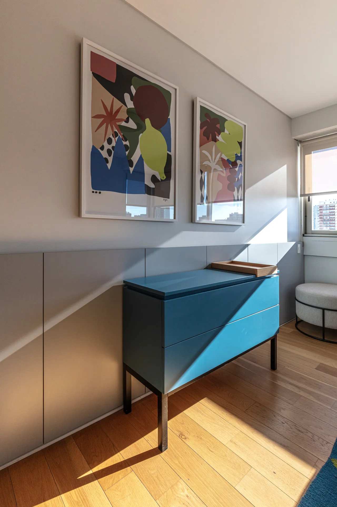
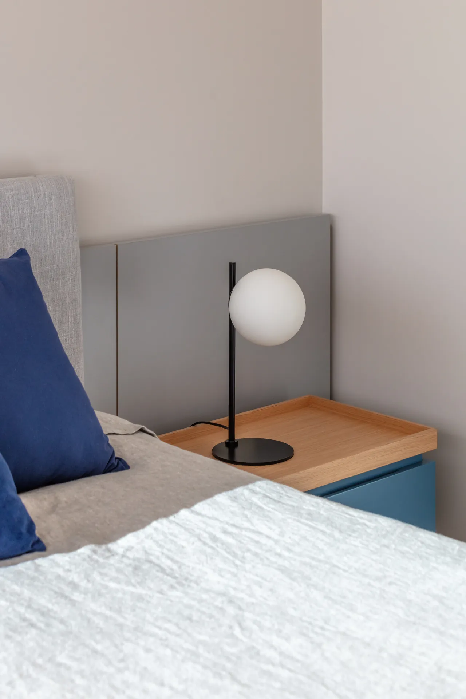
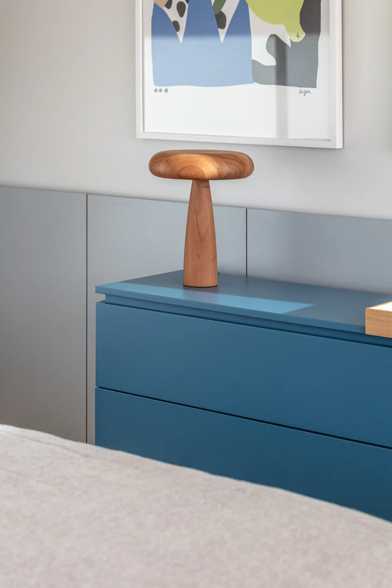
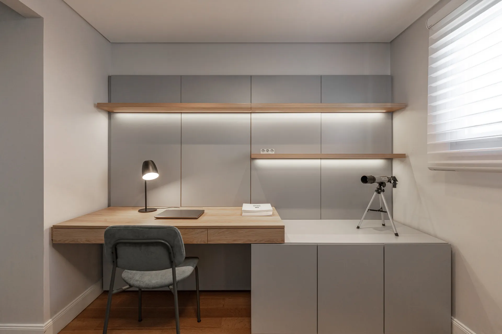
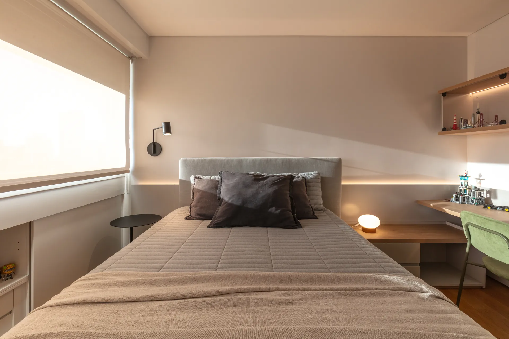
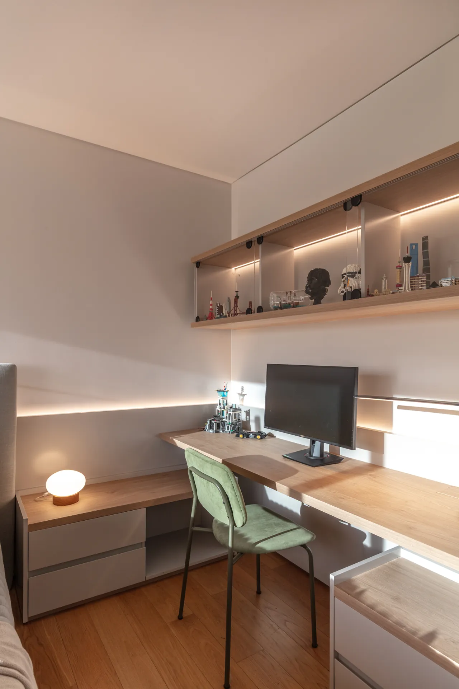
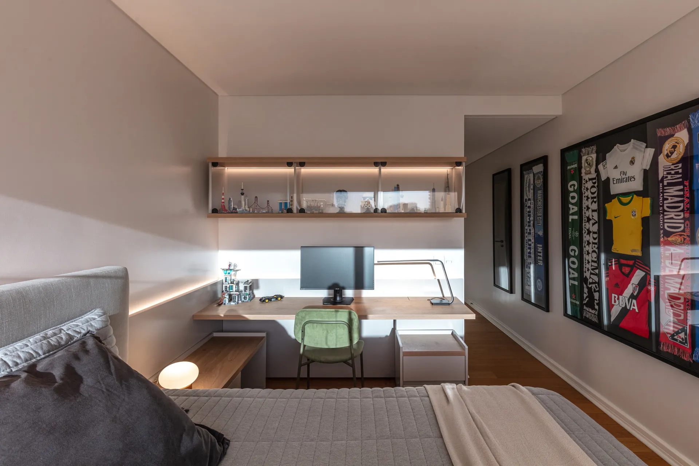
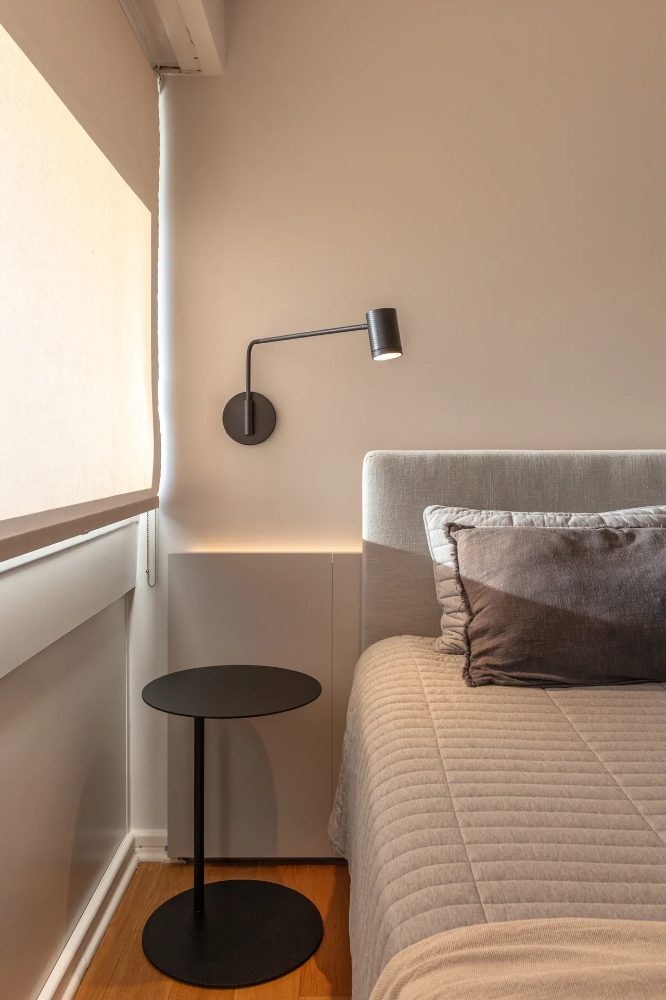
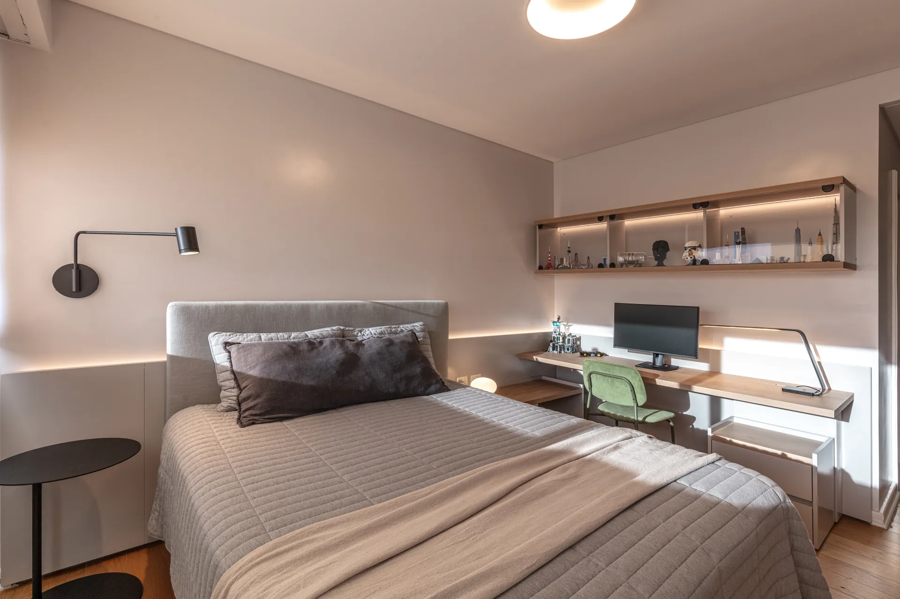

Dos suites juveniles, pensadas para acompañar una etapa de mayor autonomía
Fue la tercera intervención del estudio en este dúplex, que ya conocía bien. Esta vez, el proyecto se centró en rediseñar por completo las dos suites de los hijos jóvenes de la familia, para crear espacios más cómodos, luminosos y adaptados a la vida cotidiana de cada uno.
Los dos dormitorios se pensaron para acompañar el crecimiento y las necesidades actuales de quienes los usan: cada uno tiene una cama doble y un escritorio generoso para estudiar con comodidad.
Mobiliario diseñado a medida, guardado integrado y una paleta de materiales cálida y contemporánea dan como resultado ambientes ordenados, funcionales y serenos, con áreas de descanso, estudio y trabajo que no restan amplitud ni armonía.
Gris y azul
Sobre una paleta neutra dominada por los grises, el azul aparece en los muebles laqueados, los almohadones y las obras, y le da a la suite una personalidad propia.


Para personalizar
Una cómoda laqueada en azul, con estructura negra, y dos obras de colores personalizan el espacio. Un revestimiento de paneles grises recorre el muro a media altura y une la cabecera con el resto del equipamiento.
Madera y luz
La madera natural y los tonos neutros generan una atmósfera acogedora y atemporal.


Para estudiar
Un plano de madera natural, flotante, con cajones, se apoya en un mueble de guardado gris a medida. Los estantes tienen luz integrada y acompañan las horas de estudio.

Distintas escenas de luz acompañan el estudio, el descanso y el encuentro, y destacan cada pieza del equipamiento
Madera y luz cálida
Aquí dominan los tonos cálidos y la madera. Los acentos en negro, en el aplique y en la mesa auxiliar, ordenan la composición.

Una vitrina iluminada
El escritorio recorre todo el muro y continúa en la mesa de luz. Encima, una vitrina con luz exhibe las colecciones de quien vive allí.


Un cuarto propio
Las camisetas y bufandas enmarcadas ocupan todo un muro. Junto con la vitrina, hacen que la suite hable de quien la habita.
Luz rasante
Una línea de luz recorre el respaldo y baña el muro. Junto a la cama, un aplique orientable para leer y una mesa auxiliar negra.

Despojado y sereno
Dormitorios personalizados, donde cada rincón se diseñó para mejorar el uso diario: ambientes despojados y contemporáneos, con un aire minimalista, funcionales y serenos, y una estética que perdura en el tiempo.

Luz y materia
Esta obra es una remodelación con arquitectura interior: mobiliario a medida, guardado integrado e iluminación, resueltos con un mismo criterio.
Conocer los servicios
Otros proyectos
Ver todos los proyectos
Todo empieza con una conversación
El estudio diseña viviendas completas en Argentina, España y Estados Unidos.